Stochastic differential equations and noise processes
Pablo Almaraz, RElab
2026-05-04
Source:vignettes/sde-noise.Rmd
sde-noise.RmdSDEs in janos
A stochastic differential equation in Ito form \(dX = f(X) \, dt + g(X) \, dW\) couples a
deterministic drift \(f\) with a
state-dependent diffusion \(g\) driven
by a Wiener process \(W\). janos
specifies SDEs by providing both rhs (the drift formulas)
and diffusion (the diffusion coefficient formulas) in
model_spec(), then compiles both components to C++ for
efficient simulation. Two numerical schemes are available:
Euler-Maruyama (strong order 0.5) and Milstein (strong order 1.0).
Beyond standard Gaussian noise, janos supports four structured noise
processes, correlated Wiener processes, Levy alpha-stable increments,
colored \(1/f^\beta\) noise, and
fractional Brownian motion, as well as Poisson-driven jump-diffusion
channels.
Euler-Maruyama scheme
The Euler-Maruyama method advances the SDE by one time step as \(X_{n+1} = X_n + f(X_n) \Delta t + g(X_n) \sqrt{\Delta t} \, Z_n\) where \(Z_n \sim N(0, 1)\). This is the stochastic analog of the Euler method for ODEs and converges in the strong sense with order 0.5. Despite its simplicity, it is the default choice for many SDE problems and the only option for non-Gaussian noise.
Consider geometric Brownian motion (GBM), which models multiplicative noise on a positive quantity:
\[dS = \mu S \, dt + \sigma S \, dW\]
gbm <- model_spec(
rhs = list(S ~ mu * S),
diffusion = list(S ~ sigma * S),
state_names = "S",
parms = list(mu = 0.05, sigma = 0.2),
init = c(S = 100)
)
result_em <- dyn_sim(gbm, t_max = 5, solver = solver_euler_maruyama(dt = 0.001),
discard_transient = 0)
#> ⚙ Simulating SDE system (compiled EULER_MARUYAMA)
#> ¡ dt = 0.001, seed = 42
#> ¡ Duration: 5, discarding 0 transient
#> ⏱ Elapsed: 0.01 seconds
#> ✔ Simulation complete: 5001 time points, 5001 on attractor
print(result_em)
#>
#> Dynamical system simulation
#> ---------------------------
#>
#> System type: autonomous
#>
#> Solver: EULER_MARUYAMA (dt = 0.0010, seed = 42)
#> Simulation: t_max = 5.0, discarding 0.0 transient
#> Attractor points: 5001
#>
#> State variables on attractor (mean ± sd):
#> S: 167.9757 ± 40.7991
plot(result_em, title = "Geometric Brownian motion (Euler-Maruyama)")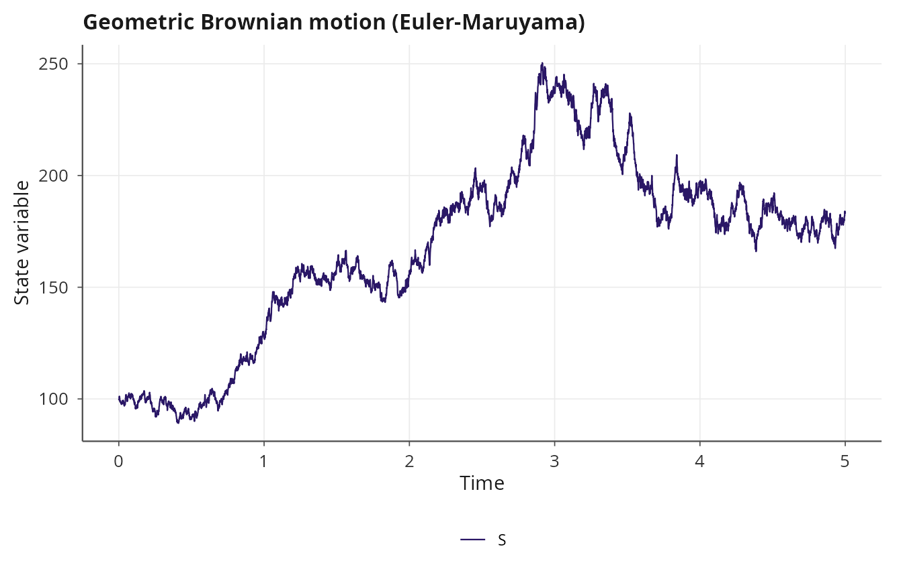
Milstein scheme
The Milstein method improves the strong convergence order to 1.0 by including the Ito-Taylor correction term involving \(g'(X) g(X)\):
\[X_{n+1} = X_n + f(X_n) \Delta t + g(X_n) \sqrt{\Delta t} \, Z_n + \tfrac{1}{2} g(X_n) g'(X_n) \left(Z_n^2 - 1\right) \Delta t\]
janos computes \(g'(X)\) via
central finite differences with a configurable perturbation
dg_eps, avoiding the need for symbolic differentiation of
the diffusion coefficient.
result_mil <- dyn_sim(gbm, t_max = 5,
solver = solver_milstein(dt = 0.001, dg_eps = 1e-6),
discard_transient = 0)
#> ⚙ Simulating SDE system (compiled MILSTEIN)
#> ¡ dt = 0.001, seed = 42
#> ¡ Duration: 5, discarding 0 transient
#> ⏱ Elapsed: 0.01 seconds
#> ✔ Simulation complete: 5001 time points, 5001 on attractor
plot(result_mil, title = "Geometric Brownian motion (Milstein)")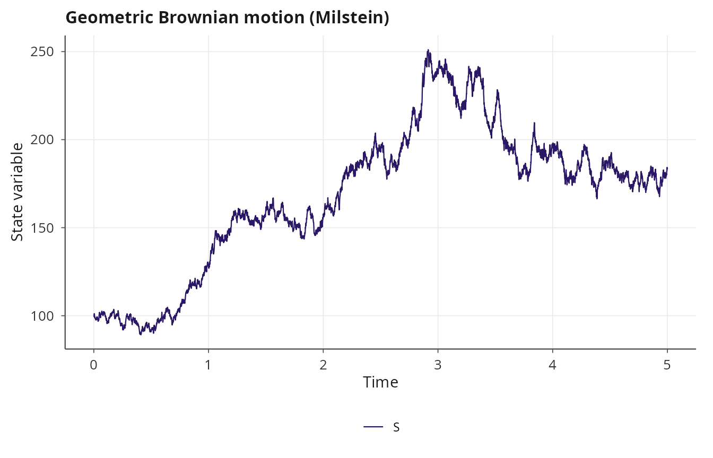
For GBM the analytical solution is known, so the Milstein scheme’s improved accuracy can be verified directly.
Ornstein-Uhlenbeck process
The Ornstein-Uhlenbeck (OU) process models mean-reverting noise, widely used in physics and finance. The drift pulls the state back toward a long-run mean \(\theta\) at rate \(\kappa\), while the diffusion coefficient is constant:
\[dX = \kappa (\theta - X) \, dt + \sigma \, dW\]
ou <- model_spec(
rhs = list(X ~ kappa * (theta - X)),
diffusion = list(X ~ sigma),
state_names = "X",
parms = list(kappa = 2.0, theta = 0.0, sigma = 1.0),
init = c(X = 5.0)
)
result_ou <- dyn_sim(ou, t_max = 10, solver = solver_euler_maruyama(dt = 0.01),
discard_transient = 0)
#> ⚙ Simulating SDE system (compiled EULER_MARUYAMA)
#> ¡ dt = 0.01, seed = 42
#> ¡ Duration: 10, discarding 0 transient
#> ⏱ Elapsed: 0.01 seconds
#> ✔ Simulation complete: 1001 time points, 1001 on attractor
plot(result_ou, title = "Ornstein-Uhlenbeck process")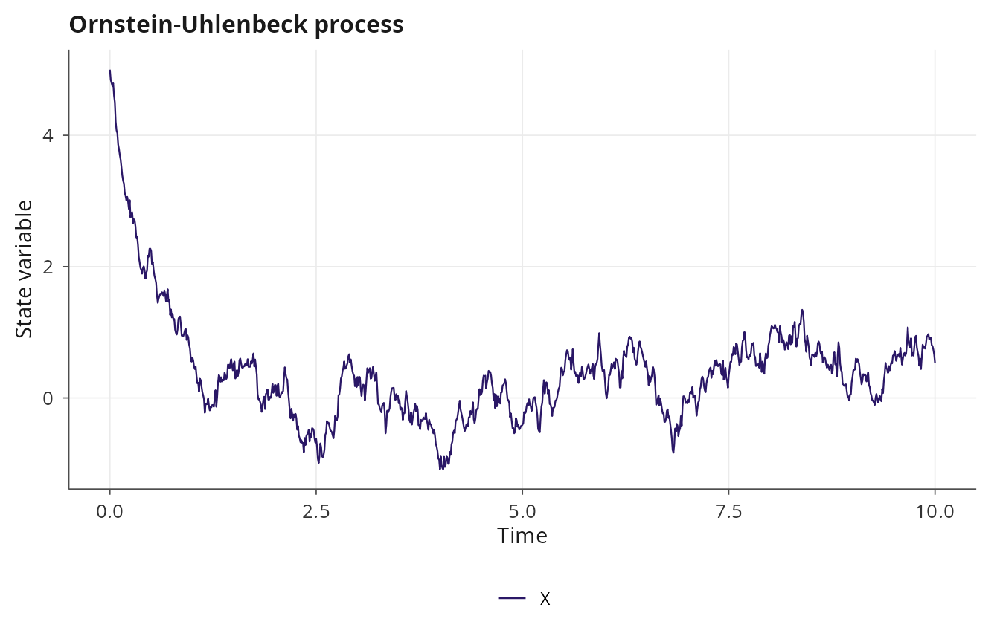
Correlated noise
When multiple state variables share noise sources (e.g.,
environmental fluctuations affecting several species simultaneously),
the Wiener increments are correlated with a user-specified covariance
matrix \(\Sigma\). The
correlated_noise() function computes the Cholesky factor
\(L\) such that \(\Sigma = L L^T\), and the SDE integrator
generates correlated increments as \(dW = L \,
dZ\) where \(dZ\) is a vector of
independent standard normals.
Sigma <- matrix(c(1.0, 0.8, 0.8, 1.0), nrow = 2)
coupled_ou <- model_spec(
rhs = list(x ~ -a * x, y ~ -b * y),
diffusion = list(x ~ sigma, y ~ sigma),
noise = correlated_noise(Sigma),
state_names = c("x", "y"),
parms = list(a = 1.0, b = 2.0, sigma = 0.5),
init = c(x = 1.0, y = 1.0)
)
result_corr <- dyn_sim(coupled_ou, t_max = 20,
solver = solver_euler_maruyama(dt = 0.01),
discard_transient = 0)
#> ⚙ Simulating SDE system (compiled EULER_MARUYAMA)
#> ¡ dt = 0.01, seed = 42
#> ¡ Duration: 20, discarding 0 transient
#> ⏱ Elapsed: 0.01 seconds
#> ✔ Simulation complete: 2001 time points, 2001 on attractor
plot(result_corr, title = "Coupled OU with correlated noise")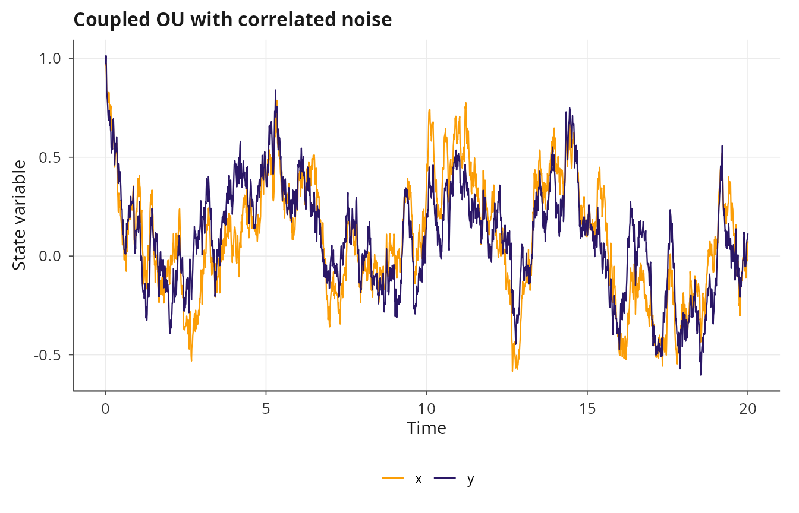
plot(result_corr, type = "phase", title = "Coupled OU with correlated noise")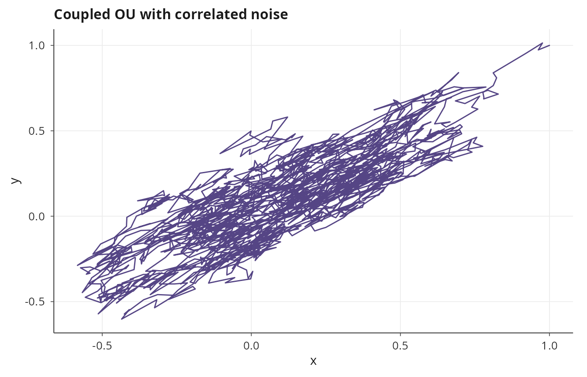
The correlation is visible in the phase portrait: the two processes tend to fluctuate together when \(\Sigma_{12}\) is positive, and in opposite directions when it is negative.
Levy alpha-stable noise
Gaussian noise has finite variance and exponentially decaying tails.
Many real-world systems exhibit heavy-tailed fluctuations with
occasional extreme jumps, which are better captured by Levy alpha-stable
distributions. The levy_noise() specification replaces the
Wiener increments with alpha-stable variates generated by the
Chambers-Mallows-Stuck (CMS) algorithm [1]. The
stability index \(\alpha \in (0, 2]\)
controls the tail heaviness (\(\alpha =
2\) recovers Gaussian noise), while the skewness parameter \(\beta \in [-1, 1]\) controls asymmetry.
The scaling of increments changes from \(\sqrt{\Delta t}\) (Gaussian) to \((\Delta t)^{1/\alpha}\) (alpha-stable), reflecting the self-similarity of stable processes.
levy_ou <- model_spec(
rhs = list(X ~ kappa * (theta - X)),
diffusion = list(X ~ sigma),
noise = levy_noise(alpha = 1.5, beta = 0),
state_names = "X",
parms = list(kappa = 2.0, theta = 0.0, sigma = 0.5),
init = c(X = 0.0)
)
result_levy <- dyn_sim(levy_ou, t_max = 50,
solver = solver_euler_maruyama(dt = 0.01),
discard_transient = 0)
#> ⚙ Simulating SDE system (compiled EULER_MARUYAMA)
#> ¡ dt = 0.01, seed = 42
#> ¡ Duration: 50, discarding 0 transient
#> ⏱ Elapsed: 0.01 seconds
#> ✔ Simulation complete: 5001 time points, 5001 on attractor
plot(result_levy, title = "Levy-driven Ornstein-Uhlenbeck")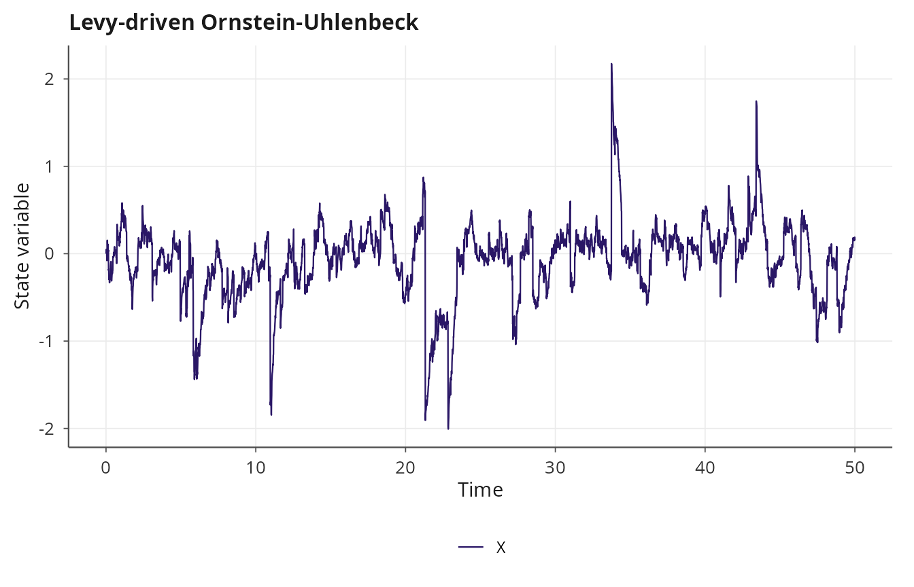
The trajectory will show occasional large excursions that would be essentially impossible under Gaussian noise, which is precisely the behavior Levy noise is designed to capture.
Composing correlated and Levy noise
Correlated noise and Levy noise can be composed: the Cholesky rotation is applied to the alpha-stable increments instead of Gaussian increments. This models systems where multiple state variables share heavy-tailed noise sources with known correlation structure.
Sigma2 <- matrix(c(1.0, 0.6, 0.6, 1.0), nrow = 2)
levy_coupled <- model_spec(
rhs = list(x ~ -a * x, y ~ -b * y),
diffusion = list(x ~ sigma, y ~ sigma),
noise = list(correlated_noise(Sigma2), levy_noise(alpha = 1.7, beta = 0)),
state_names = c("x", "y"),
parms = list(a = 1.0, b = 1.5, sigma = 0.3),
init = c(x = 0.0, y = 0.0)
)
result_cl <- dyn_sim(levy_coupled, t_max = 30,
solver = solver_euler_maruyama(dt = 0.01),
discard_transient = 0)
#> ⚙ Simulating SDE system (compiled EULER_MARUYAMA)
#> ¡ dt = 0.01, seed = 42
#> ¡ Duration: 30, discarding 0 transient
#> ⏱ Elapsed: 0.01 seconds
#> ✔ Simulation complete: 3001 time points, 3001 on attractor
plot(result_cl, type = "phase", title = "Correlated Levy-driven system")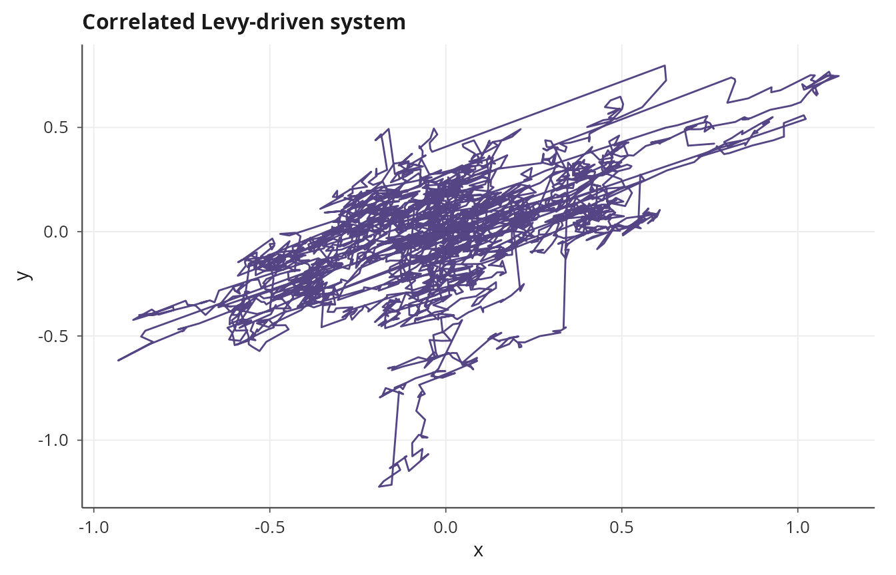
Colored noise
Environmental fluctuations often exhibit temporal autocorrelation
with a specific spectral structure. Colored noise with power spectral
density \(S(f) \propto 1/f^\beta\)
captures this: \(\beta = 0\) is white
noise, \(\beta = 1\) is pink (flicker)
noise, and \(\beta = 2\) is Brownian
(red) noise. The colored_noise() specification generates
noise increments via FFT spectral synthesis, producing a pre-computed
noise matrix that is passed into the C++ integrator.
pink_ou <- model_spec(
rhs = list(X ~ kappa * (theta - X)),
diffusion = list(X ~ sigma),
noise = colored_noise(beta = 1.0, amplitude = 1.0),
state_names = "X",
parms = list(kappa = 1.0, theta = 0.0, sigma = 0.5),
init = c(X = 0.0)
)
result_pink <- dyn_sim(pink_ou, t_max = 50,
solver = solver_euler_maruyama(dt = 0.01),
discard_transient = 0)
#> ⚙ Simulating SDE system (compiled EULER_MARUYAMA)
#> ¡ dt = 0.01, seed = 42
#> ¡ Duration: 50, discarding 0 transient
#> ⏱ Elapsed: 0.01 seconds
#> ✔ Simulation complete: 5001 time points, 5001 on attractor
plot(result_pink, title = "OU process with pink noise")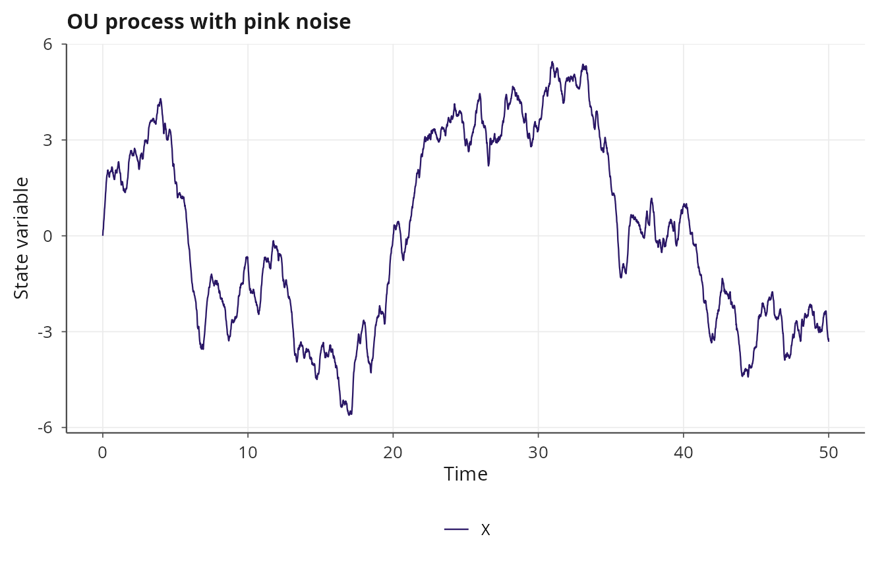
Because the noise is pre-generated in R before being passed to C++, the Milstein scheme is not available for colored noise (it would require the derivative of the pre-generated noise path, which is not meaningful).
Fractional Brownian motion
Fractional Brownian motion (fBm) is a Gaussian process with
stationary increments whose Hurst parameter \(H \in (0, 1)\) controls the degree of
long-range dependence. When \(H =
0.5\), fBm reduces to standard Brownian motion (independent
increments). When \(H > 0.5\) the
increments are positively correlated (persistent, long memory), and when
\(H < 0.5\) they are negatively
correlated (anti-persistent, rough paths). The fbm_noise()
specification generates fBm sample paths via the Wood-Chan circulant
embedding method [2], which runs in \(O(n \log n)\) time, with a Hosking fallback
[3] for cases where the circulant matrix is not
positive definite.
fbm_ou <- model_spec(
rhs = list(X ~ kappa * (theta - X)),
diffusion = list(X ~ sigma),
noise = fbm_noise(H = 0.75, method = "circulant"),
state_names = "X",
parms = list(kappa = 1.0, theta = 0.0, sigma = 0.5),
init = c(X = 0.0)
)
result_fbm <- dyn_sim(fbm_ou, t_max = 50,
solver = solver_euler_maruyama(dt = 0.01),
discard_transient = 0)
#> ⚙ Simulating SDE system (compiled EULER_MARUYAMA)
#> ¡ dt = 0.01, seed = 42
#> ¡ Duration: 50, discarding 0 transient
#> ⏱ Elapsed: 0.01 seconds
#> ✔ Simulation complete: 5001 time points, 5001 on attractor
plot(result_fbm, title = "OU process with fractional Brownian motion")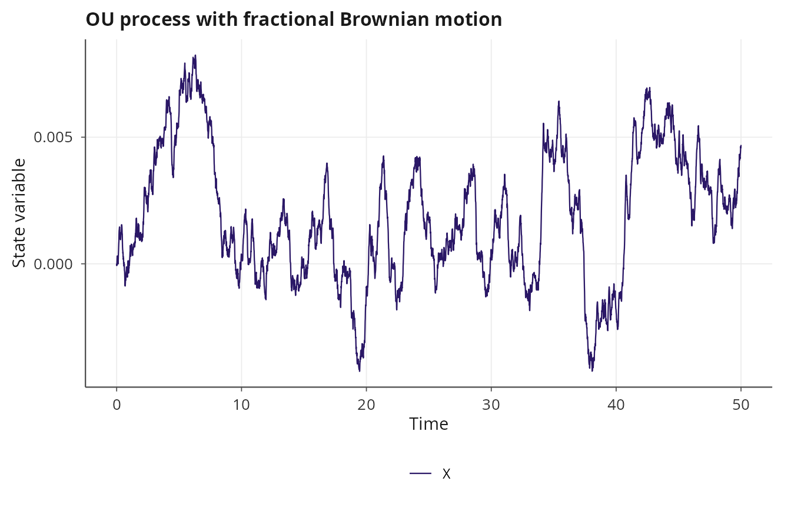
The persistent memory of fBm with \(H > 0.5\) produces visibly smoother trajectories than standard Brownian motion, with long-term trends that can mimic regime-like behavior.
Jump-diffusion
Jump-diffusion processes extend SDEs with Poisson-driven discontinuous jumps:
\[dX = f(X) \, dt + g(X) \, dW + h(X) \, dN\]
where \(N\) is a Poisson process
with state-dependent intensity and \(h(X)\) determines the jump size. janos
supports both deterministic and stochastic jump sizes, the latter drawn
from normal, exponential, or uniform distributions. The
jumps argument in model_spec() specifies the
jump channels using formula syntax.
The Merton jump-diffusion model for asset prices adds log-normally distributed jumps to GBM:
merton <- model_spec(
rhs = list(S ~ mu * S),
diffusion = list(S ~ sigma * S),
jumps = list(
S ~ list(
intensity = ~ lambda,
size_distribution = "normal",
size_mean = ~ jump_mean * S,
size_sd = ~ jump_sd * S
)
),
state_names = "S",
parms = list(mu = 0.05, sigma = 0.2, lambda = 0.5,
jump_mean = -0.02, jump_sd = 0.1),
init = c(S = 100)
)
result_jd <- dyn_sim(merton, t_max = 5,
solver = solver_jump_diffusion(dt = 0.001, seed = 42),
discard_transient = 0)
#> ⚙ Simulating Jump-diffusion system (jump-diffusion, Euler-Maruyama)
#> ¡ Jump channels: 1
#> ¡ dt = 0.001, seed = 42
#> ¡ Duration: 5, discarding 0 transient
#> ⏱ Elapsed: 0.01 seconds
#> ✔ Simulation complete: 5001 time points, 5001 on attractor
print(result_jd)
#>
#> Dynamical system simulation
#> ---------------------------
#>
#> System type: autonomous
#>
#> Solver: JUMP_DIFFUSION (dt = 0.0010, seed = 42)
#> Total jumps: 2
#> Simulation: t_max = 5.0, discarding 0.0 transient
#> Attractor points: 5001
#>
#> State variables on attractor (mean ± sd):
#> S: 125.6880 ± 17.4767
plot(result_jd, title = "Merton jump-diffusion")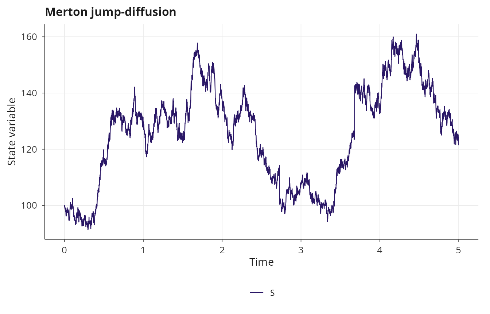
Deterministic jump sizes
For systems where the jump magnitude is a known function of the current state (e.g., instantaneous dose delivery in pharmacokinetics), use a deterministic jump specification:
pk <- model_spec(
rhs = list(C ~ -k * C),
diffusion = list(C ~ sigma),
jumps = list(
C ~ list(
intensity = ~ lambda,
size = ~ dose
)
),
state_names = "C",
parms = list(k = 0.1, sigma = 0.05, lambda = 0.2, dose = 10),
init = c(C = 0)
)
result_pk <- dyn_sim(pk, t_max = 100,
solver = solver_jump_diffusion(dt = 0.01, seed = 42),
discard_transient = 0)
#> ⚙ Simulating Jump-diffusion system (jump-diffusion, Euler-Maruyama)
#> ¡ Jump channels: 1
#> ¡ dt = 0.01, seed = 42
#> ¡ Duration: 100, discarding 0 transient
#> ⏱ Elapsed: 0.01 seconds
#> ✔ Simulation complete: 10001 time points, 10001 on attractor
plot(result_pk, title = "Pharmacokinetic dosing model")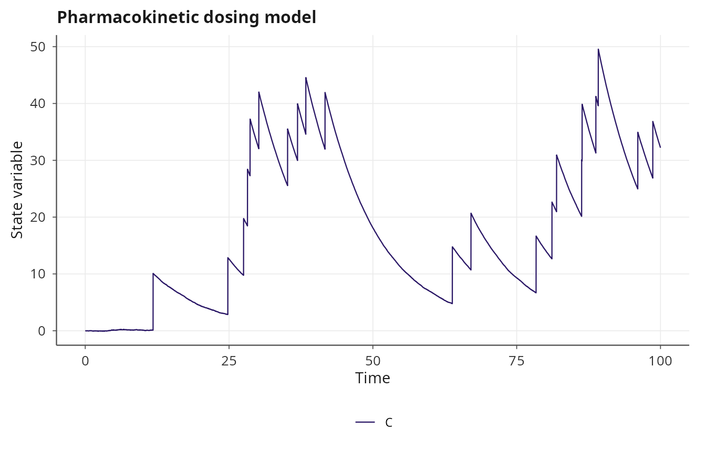
Noise composability rules
Not all noise types can be combined. The composability rules are:
- Correlated + Levy: allowed. The Cholesky rotation is applied to the alpha-stable increments.
- fBm alone: allowed. Cannot be composed with any other noise type.
- Colored alone: allowed. Cannot be composed with any other noise type.
- Correlated + fBm or Correlated + colored: not allowed. These combinations would require generating correlated non-Gaussian non-independent increments, which is not supported.
- Milstein scheme: only available for standard Gaussian noise (with or without correlation). Blocked for Levy, fBm, and colored noise because the Ito-Taylor correction assumes Gaussian increments.
The resolve_noise_spec() function validates these
constraints at model specification time, before any compilation
occurs.
References
[1] Chambers, J. M., Mallows, C. L., & Stuck, B. W. (1976). A method for simulating stable random variables. Journal of the American Statistical Association, 71(354), 340-344. doi:10.1080/01621459.1976.10480344
[2] Wood, A. T. A., & Chan, G. (1994). Simulation of stationary Gaussian processes in \([0, 1]^d\). Journal of Computational and Graphical Statistics, 3(4), 409-432. doi:10.2307/1390903
[3] Hosking, J. R. M. (1984). Modeling persistence in hydrological time series using fractional differencing. Water Resources Research, 20(12), 1898-1908. doi:10.1029/WR020i012p01898